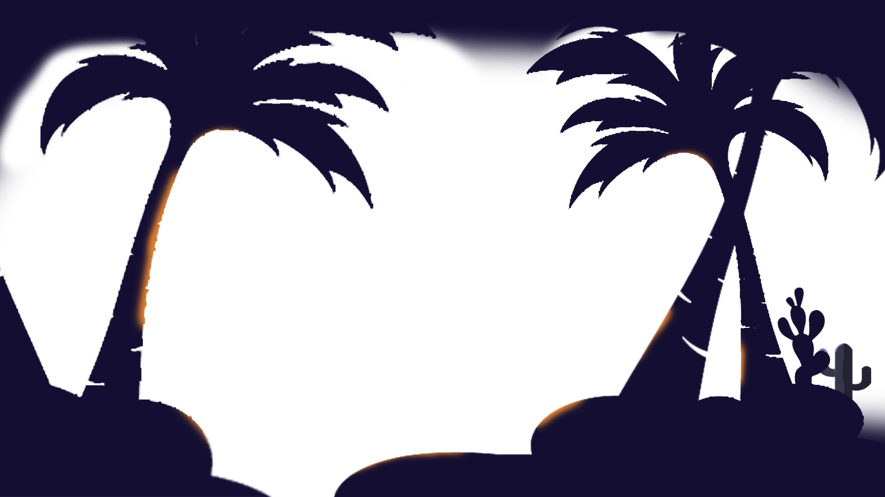
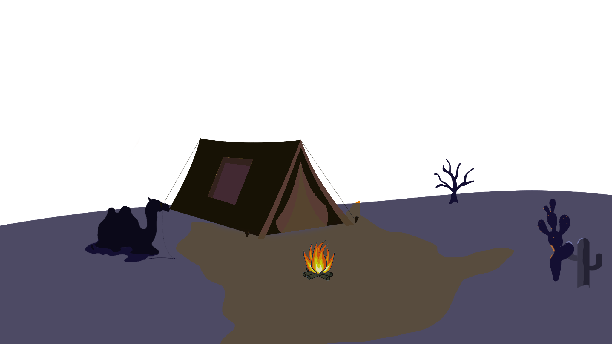
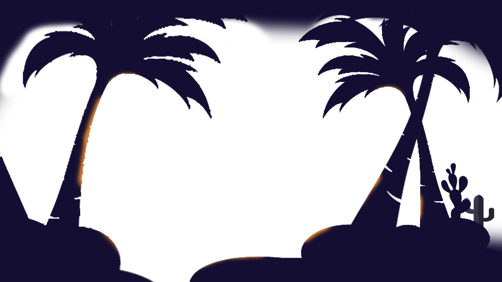
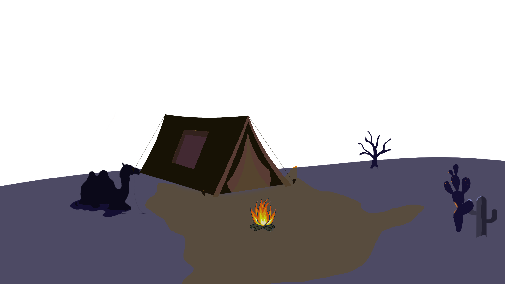

The intention of created this website is just to fill my free time, This
website created based on my experience that i got from youtube tutorial
and other source. For that, im appreaciate it if someone give me
suggestion about the perfection this website
This is my personal webpage, im newbie in website development but
im try my best, i do like to help people and i hope this website can
education you><
 



Im just an ordinary student that keen with design, im study at vocational highschool major multimedia, im not really an creative person but when i thought something cool i will realize it
This is my personal webpage, im newbie in website development but
im try my best, i do like to help people and i hope this website can
education you><